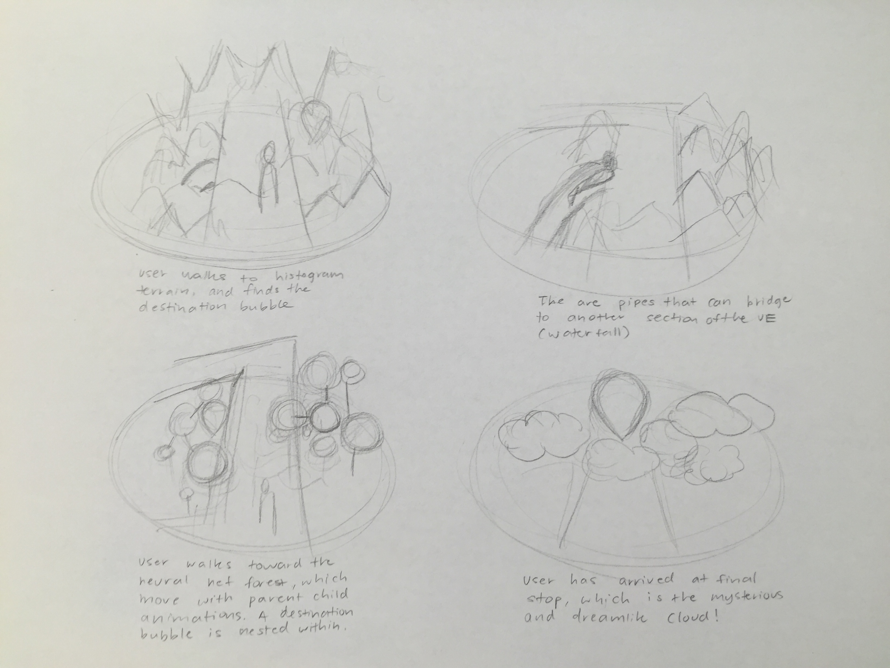

Sketches and Storyboard
For Data Dream, I first sketched out my idea of how the architecture of the environment would look like and pinpointing out what features I wanted. From there, I drew storyboards of the environment, from the City to the Categorization Garden to the Histogram Terrain to the Neural Net Forest and to the Cloud. I envisioned a dynamic environment that the user can explore and enjoy, so every terrain's layout, color and music are crucial to the space.

This is the architecture of Data Dream, and users teleport from one terrain to the next.

All of the floors starting from the second level are transparent to connect each terrain.